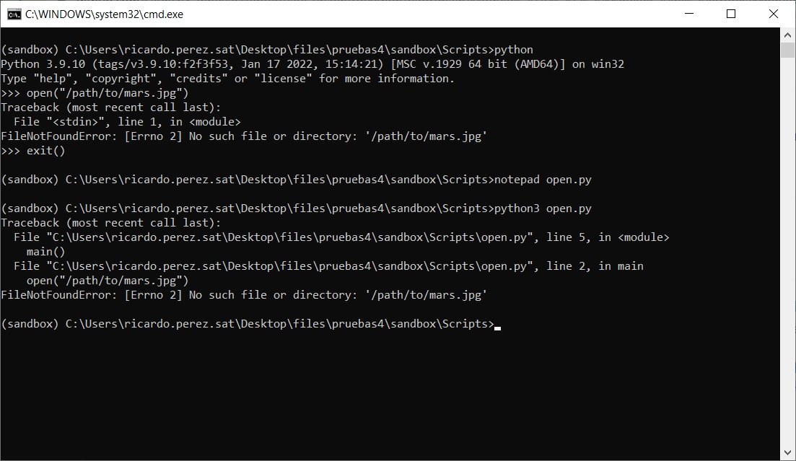
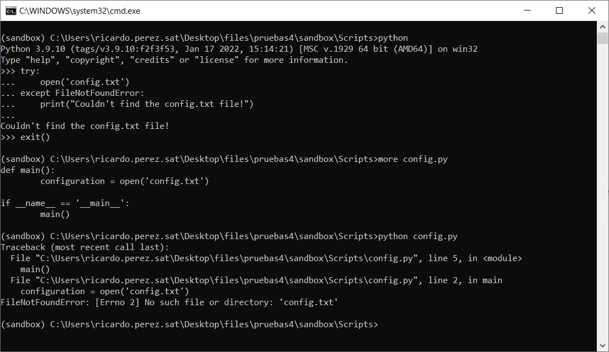
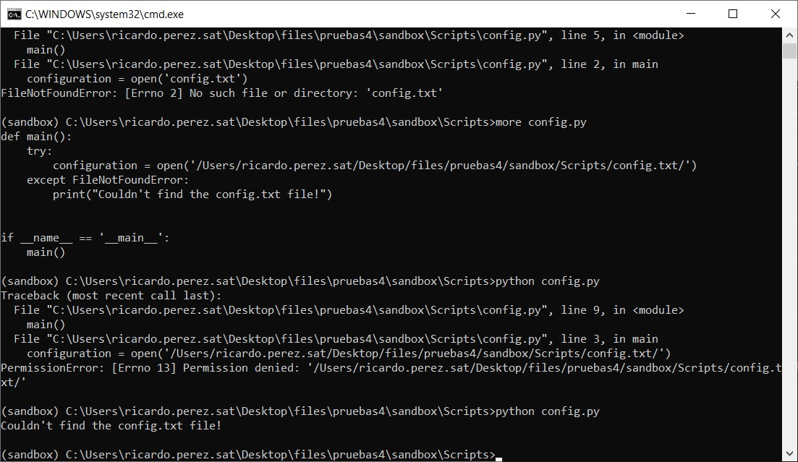
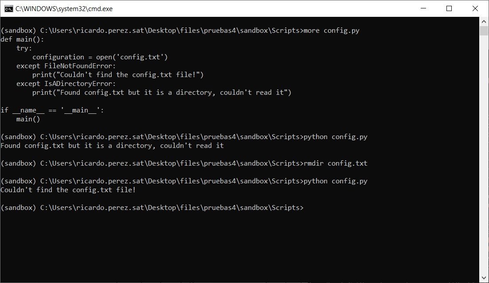
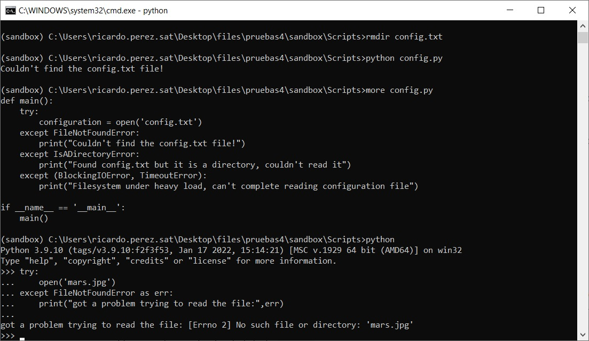
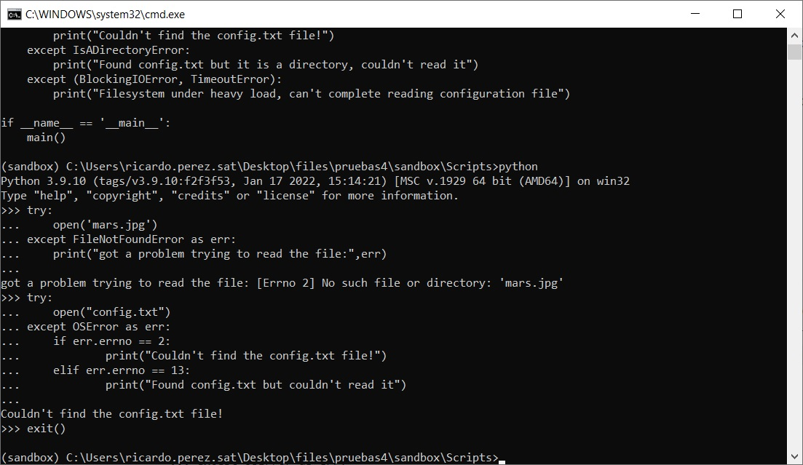
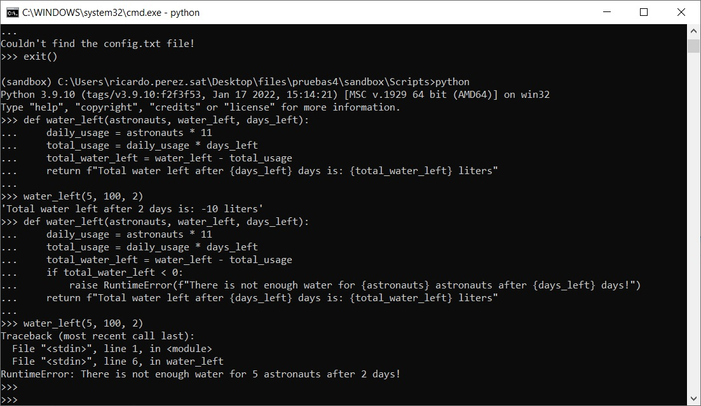
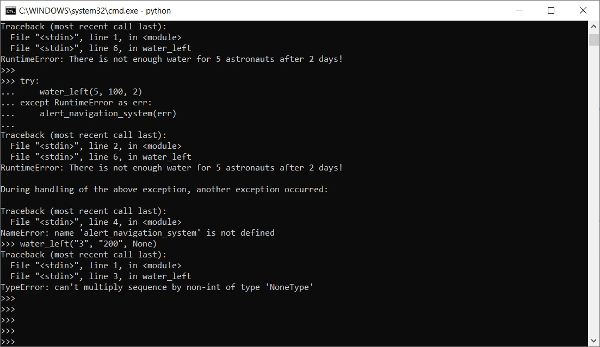
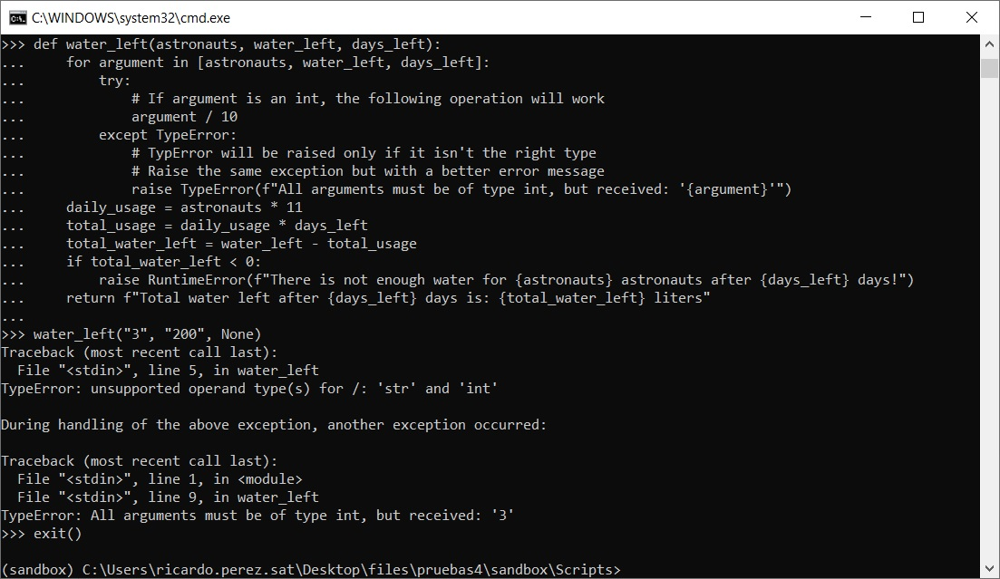

Ricardo Thomas Perez Cancino
Reporte de ejecución de comandos para el ambiente separado de Python sandboxing:
actividades de tracebacks

actividades para controlar excepciones





actividades de generacion de excepciones


